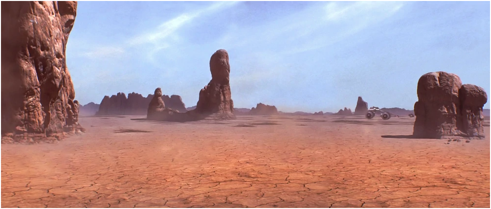
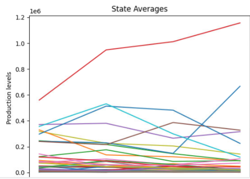

Home
Portfolio
About Me
This is my Portfolio Page!
For the 1.1.9 Project we created a game. The objective of the game is to move your starting dot through all of the squares and raech the end in the most efficient way possible. We made it so the starting and end point is randomly generated as well as the obstacles are randomly generated. We put all of this onto a grid system and made it so arrow keys moved your character through on square of the grid. After you go through all the obstacles/squares and reach the end, the squares turn green and you win!
For the 1.2.5 Project we created a game. Our game was called Spaceship Battle. We made this game to be similar to the classic 8-bit game, Space Invaders. The objective of this game is for the spaceship to shoot as many aliens as possible before the aliens reach the spaceship. If an alien gets all the way to the spaceship, the game ends.
For our scratch projected we created clicker game. In this game the objective is to click the rice to get rice. With this rice you can buy upgrades which produce rice passivly. The goal of the game is to keep buying upgrades and to obtain as high of a score as possible.
3.1.6 Rover Phone Home Project
Desert Plains

After examining our graphs and comparing them to the graphs we thought would occour for each of the 20 different situations. We concluded that the most likely area the rover was in was desert plains. This is becase all of the 4 graphs we created were very similar to the 4 graphs we labeled from our data. Since these 4 graphs were more of a match than any other of the sets os 4 graphs, we chose this location. We assumed the giant spike was light, the constant spikes and lows as sounds, the constant low changes was pressure and the fluctuating rise and fall as temperature.
For our 3.2.4 project we extract data from online data sets and edited the data to create graphs and visualizations. We accopmplished these visualizations through coding in python. After we created visualizations we drew several conclusions based of them. For example a conclusion we drew was how since operational facilities increased in the U.S., they honey production increased as well. The following will be some graphs from the project.
This graph shows the average honey production across all 50 states, over 5 year intervals.

This graph shows the average honey production levels across each of the 50 states over years.